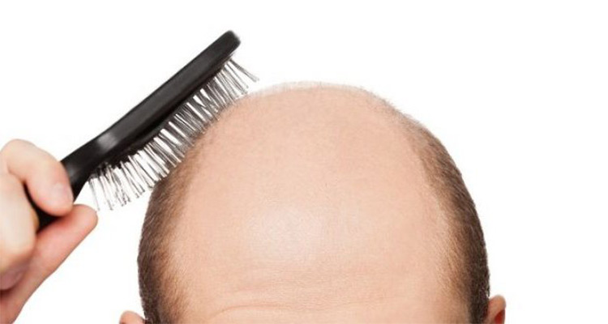

还记得成龙大哥的“成名词”——“Duang~~”么？他代言的广告视频也被众多视频爱好者给加工成为了许多搞笑幽默的视频。对于头发，今天可是一个特别的节日——“全国爱发日”，“5月28日”谐音“吾爱发”，故为爱发日，旨在唤起更多人爱护头发。
脱发？这一词想必大家都不陌生吧！经常会出现于我们的视线中，同时也困扰着很多人。脱发的危害是什么呢?一些朋友们简单的认为，脱发就是不好看而已，其实不然，脱发带来的弊端可不仅仅如此。根据一些调查显示，许多年轻的女生不喜欢自己的男朋友或老公脱发。因为脱发在她们心中是“最不帅”的代名词；而现在的单位招聘员工非常注重形象，而脱发对颜值影响也挺大，所以在某些岗位的求职上会遇到困惑。
1、作息要规律，睡眠要充足，才能促进皮肤及毛发正常新陈代谢，而新陈代谢主要发生在晚上，特别是晚上10点到凌晨2点期间，这一段时间睡眠充足，就可以使头发正常新陈代谢。反之，就容易导致脱发。
2、保持心情愉悦。现代人工作压力大，学习紧张，用脑过度，易喜易悲，有时候会影响到头发营养的供给和生长，从而引起脱发。焦虑不安还会使脱落速度加快，而心情舒畅则可以减轻脱发症状。
3、多吃头发喜爱的食物。铁、硫、维生素A、维生素E和优质蛋白质，是头发生长所必需的营养物质，因而饮食要以上述元素为侧重，并多吃一些粗纤维食品和杂粮，减少油脂分泌，少吃肥肉、猪油、动物内脏等。
4、按摩头皮促生长。每日睡觉前和次日起床后，将双手食指插入发内，从前额经头顶到后脑揉搓头皮，每次2~4分钟。经常按摩头皮，可改善头皮营养，头发得以滋润和生长。
1、洗头发太勤、水温不佳、不认真洗头都会引起头发的不满哦；
2、平常要根据自己的发质来挑选适合的洗发水~